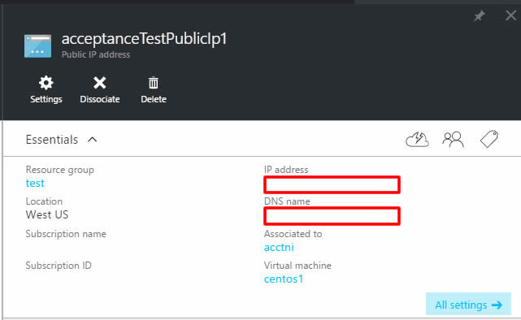

Deploying Azure VM's using terraform
Deploying VM
1. Go to your terrform installation directory, and verify your configuraion
./terraform validate
2. Apply your configuration
./terraform apply
3. When completed you should see some config parameters and a success message like below

4. Verify your installation on the azure portal. You can see my deployment succeeded

5. Now connect to your machine. You should be able to see the public IP address via
./terraform show
You can also retrieve your public dns name via the management portal:

References
https://azure.microsoft.com/en-us/documentation/articles/resource-group-create-service-principal-portal/
https://blogs.technet.microsoft.com/kv/2015/06/02/azure-key-vault-step-by-step/
https://azure.microsoft.com/en-us/documentation/articles/key-vault-get-started
https://azure.microsoft.com/en-us/documentation/articles/resource-group-authenticate-service-principal/
https://azure.microsoft.com/en-us/documentation/articles/resource-group-create-service-principal-portal/
https://blogs.technet.microsoft.com/kv/2015/06/02/azure-key-vault-step-by-step/
https://azure.microsoft.com/en-us/documentation/articles/key-vault-get-started
https://azure.microsoft.com/en-us/documentation/articles/resource-group-authenticate-service-principal/